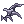
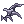
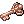
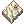
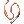
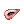
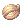
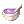
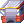
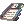

Headgear Awakening
Some selected headgears can go through a process called Awakening.
Once a headgear is awakened, it can be exchanged back and forth between two distinct versions.
Cards or refines are not lost with this process, but some of those lose its slot once awakened or swapped, so make sure you remove any cards the item has before proceeding, if that is the case.
WoE Hats
This is done exclusively through Limes the Milliner. You can find her on Third Floor of the Main Office or at @go woe.
Here is a list of current WoE hats that can be awakened, as well as their awakened versions:


You can awaken these hats at the cost of 2,500  Siege Tokens each.
Siege Tokens each.
For more information about them, visit the Limes the Milliner page.
Archaeologist

The Archaeologist can be found on .
Talk to him to start the Awakening Main Quest or Transform a Headgear, to swap back and forth between the slotted or non-slotted versions of  New Wave Sunglasses and  Black Devil's Mask, at no additional cost.
New Wave Sunglasses and  Black Devil's Mask, at no additional cost.
Main Quest
The main quest asks you to go to certain places and investigate a certain number of strange events.
- You start by going to the top of the Clock Tower.
- To access the top floor, you can use the Warper > Dungeons > Clock Tower.
- Once there, use the command and follow the arrows until you find the Gatekeeper.
- You will need a  Key of Clock Tower in your inventory for him to let you proceed.
- Once you're on the top floor walk towards the Fracture at the very center, .
- Walk near it and a pop up shall appear.
- Go back to Archaeologist. He was mistaken and suspect Time Holder is causing the temporal instabilities.
- Complete the Endless Cellar and kill Time Holder at the end. (Seeing him die and talking to the reward NPC is enough to complete the step.)
- Go back to Archaeologist again to discover that it wasn't all. While you were away, he found something related to the previous event that specifies:
- a corridor, at the center of a great hall, guarded by ten soldiers and in the presence of four great pharaohs, inside a Nightmare.
- After a little thinking, only one place really fits the description. The Nightmare Pyramids.
- Take the Warper > Dungeons > Pyramids and enter on the portal in the center of the map. Go south until you find a cat and pay him 5000 zeny to enter the Nightmare Pyramids.
- Once there, proceed to the portal on the bottom right and search for the Wall Fracture, as shown on the third image.
- Examining the fracture further shows something is behind the wall. You need to blow the crack to see more of the writings, and for that we need the following items:
- With the explosion, the writings on the wall are legible. You can't take part of the wall with you, but you can create a rubbing of the ancient text and give it to the Archaeologist. For that, you will need:
- Take it to the Archaeologist and the Awakening main quest is now done. You can proceed with the Headgear Awakening quests.


Once the Awakening main quest is done, he will provide two more services:
- "Headgear Awakening", which will start the awakening quest for a selected headgear.
- "Free Decard", which allows you to remove cards from your account-bound awakened headgear indefinitely, as many times as you want.
- To be able to do so, you need to pay an 100
 Gold Coins fee and account bind your already awakened New Wave Sunglasses or Black Devil's Mask.
Gold Coins fee and account bind your already awakened New Wave Sunglasses or Black Devil's Mask.
- To be able to do so, you need to pay an 100
Here is a list of current hats that can be awakened, as well as their awakened versions:
| Base Hat | Transformed Result |
|---|---|
| New Wave Sunglasses Aftercast delay - 10% |
 New Wave Sunglasses [1] New Wave Sunglasses [1] Aftercast delay - 5% |
| Black Devil's Mask All stats + 2 |
 Black Devil's Mask [1] Black Devil's Mask [1]All stats + 1 |
 Rosary In Mouth Rosary In MouthAll stats + 1 |
 Magical Rosary In Mouth Magical Rosary In Mouth
|
The regular versions of the headgears above, can be obtained through a Headgear Quest and are necessary to continue with the Awakening process.
Middle Headgear Awakening
Each middle headgear will have its own item list requirements to be Awakened. Once the process is done, you can freely swap between the slotted or unslotted versions of the item.
The item amounts will vary, depending on the slotted headgear you sacrifice when the quest starts. Tier 1 being the most difficult, but requiring a cheaper headgear and Tier 3 requiring an expensive headgear, but also less items overall.
The full requirement lists, together with their respective tiers, can be seen below. Note that Rosary In Mouth does not have any tiers, requiring always the same quantity of items and no slotted headgear as sacrifice.
Be aware that any MVP needed to be defeated can be done outside of their natural spawn point. This means that instances such as Central Lab, Endless Tower, or Endless Cellar are perfectly fine and also count for the quest.
| New Wave Sunglasses to New Wave Sunglasses [1]
| ||
|---|---|---|
| Item | Tier (Sacrifice Headgear) | Full Requirement List |

|
Tier 1 |
Defeating the MVP Vesper 1  Armor Charm 5  Electric Wire 600 100 |
|
Tier 2 |
Defeating the MVP Vesper 300 75 | |
|
Tier 3  Elven Ears [1] |
Defeating the MVP Vesper 150 50 | |


| Black Devil's Mask to Black Devil's Mask [1]
| ||
|---|---|---|
| Item | Tier (Sacrifice Headgear) | Full Requirement List |
|
Tier 1 |
Defeating the MVP Dark Lord 666  Seed of Life 40  Violet Dyestuffs | |
|
Tier 2 |
Defeating the MVP Dark Lord 666 Seed of Life | |
|
Tier 3 |
Defeating the MVP Dark Lord 666 Seed of Life | |


| Rosary In Mouth to Magical Rosary In Mouth
| ||
|---|---|---|
| Item | Full Requirement List | |

|
Defeating the MVP Wounded Morocc 25 Gold Bullion 10 250 500 10 Treasure Box | |


 Magical Booster to Magical Booster to  Crimson Magical Booster Crimson Magical Booster
| ||
|---|---|---|
| Item | Full Requirement List | |

|
1  Emergency Mado Gear 4  Shape Shifter 300 200 500 | |


ᴺᵒᵗᵉ - This is a script drop. It can only be dropped while the respective Awakening quest is active.
 Carnelian is obtained from monsters in Magma Dungeon F3.
Carnelian is obtained from monsters in Magma Dungeon F3.- Chipped Armor Piece is obtained from monsters in Abyss Glast Heim.
- Unstable Quartz is obtained from monsters in Einbech Dungeon 3.